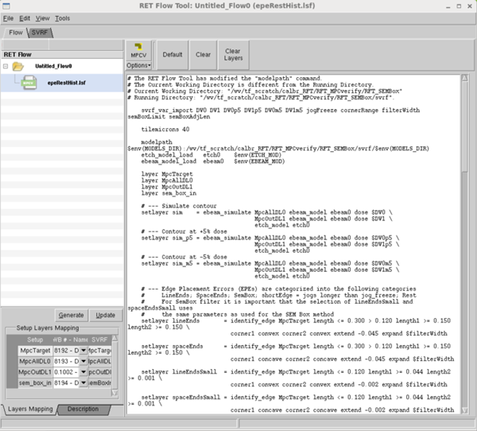
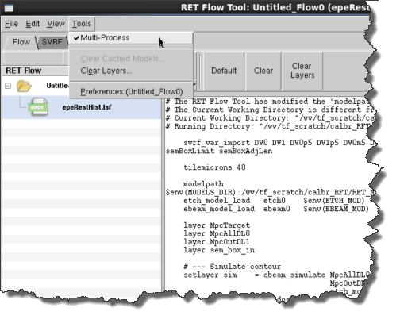

A Calibre MPCverify session must be correctly
loaded and configured before you can use it to perform verification
tasks.
Restrictions and Limitations
Procedure
- Follow the steps in “Creating a Session” to create
a Calibre MPCverify session.
If you used one of the
methods that loaded an existing file, your RET Flow Tool should
look similar to Figure 1.
If the session text entry
pane is empty, you can use the Copy and Paste options from the Edit menu or right-mouse context
menu inside the text pane to copy directly from a Calibre MPCverify
rule file.
Figure 1. RET Flow Tool, Calibre
MPCverify Session
- Adjust
the layer mapping from the "Setup Layers Mapping" section in the
bottom left part of the RET Flow Tool window.
- (Optional)
Run Calibre MPCverify in Multi-Process mode if you want to ensure
the process is not affected by the parent Calibre WORKbench process.
Figure 2. Multi-Process
Mode Selection
- Test Calibre MPCverify by
clicking the MPCV button.
Results
Calibre MPCverify runs the script,
and any layers that created result markers or contours are added
to the active layout in the viewer main window. Use the Clear
Layers button if you want to clear the produced layers.